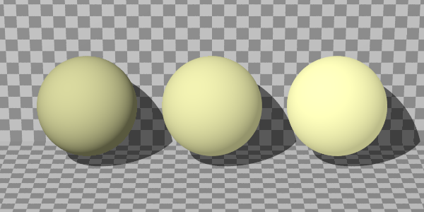
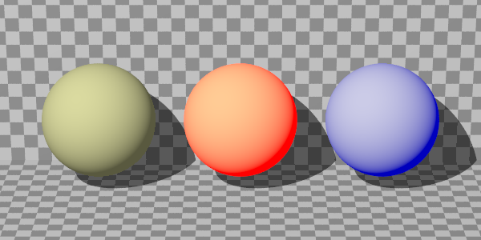
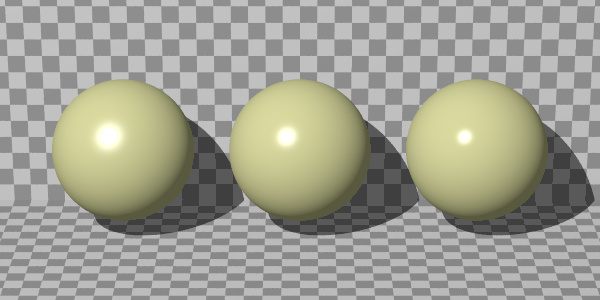
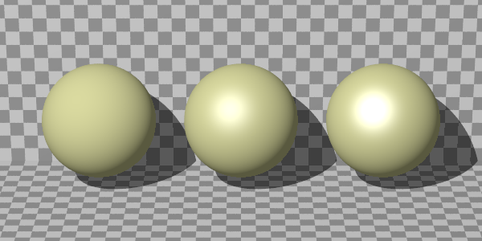
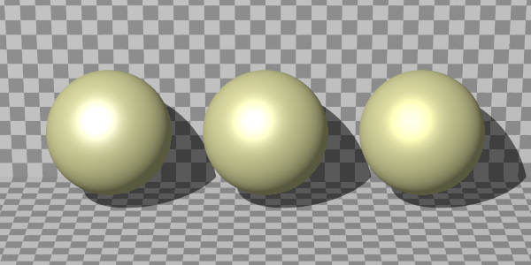

Finish
Rendering function
from fdray import *
def render(finish1, finish2, finish3):
checker = Pigment("checker", Color("white"), Color("gray")).scale(0.1)
sphere = Sphere((0, 0, 0), 0.4, Color((1, 1, 0.5)))
return Scene(
Camera(0, 20, view_scale=1.2),
LightSource((1, 120, 45), "white"),
Plane((1, 0, 0), -0.5, checker),
Plane((0, 0, 1), -0.5, checker),
sphere.translate(0, -1, 0).add(finish1),
sphere.add(finish2),
sphere.translate(0, 1, 0).add(finish3),
).render(600, 300)
Ambient
render(
Finish(ambient=0.1), # default
Finish(ambient=0.3),
Finish(ambient=0.5),
)

render(
Finish(ambient=0.1), # default
Finish(ambient=Color("red")),
Finish(ambient=(0, 0, 1)),
)

Emission
render(
Finish(emission=0.1), # defaut
Finish(emission=0.3),
Finish(emission=0.5),
)

render(
Finish(emission=0.1), # defaut
Finish(emission=Color("red")),
Finish(emission=(0, 0, 1)),
)

Diffuse
render(
Finish(diffuse=0.3),
Finish(diffuse=0.6), # default
Finish(diffuse=0.9),
)

Brilliance
render(
Finish(brilliance=1), # default
Finish(brilliance=3),
Finish(brilliance=5),
)

Phong
render(
Finish(phong=0), # default
Finish(phong=0.3),
Finish(phong=1),
)

render(
Finish(phong=1, phong_size=20),
Finish(phong=1, phong_size=40), # default
Finish(phong=1, phong_size=80),
)

Specular
render(
Finish(specular=0), # default
Finish(specular=0.5),
Finish(specular=1),
)

Roughness
render(
Finish(specular=1, roughness=0.01),
Finish(specular=1, roughness=0.05), # default
Finish(specular=1, roughness=0.1),
)

Metallic
render(
Finish(specular=1, metallic=0),
Finish(specular=1, metallic=0.5),
Finish(specular=1, metallic=1), # default
)

Reflection
render(
Finish(reflection=0), # default
Finish(reflection=0.3),
Finish(reflection=1),
)

render(
Finish(reflection=0), # default
Finish(reflection=Color("red")),
Finish(reflection=(0, 0, 1)),
)